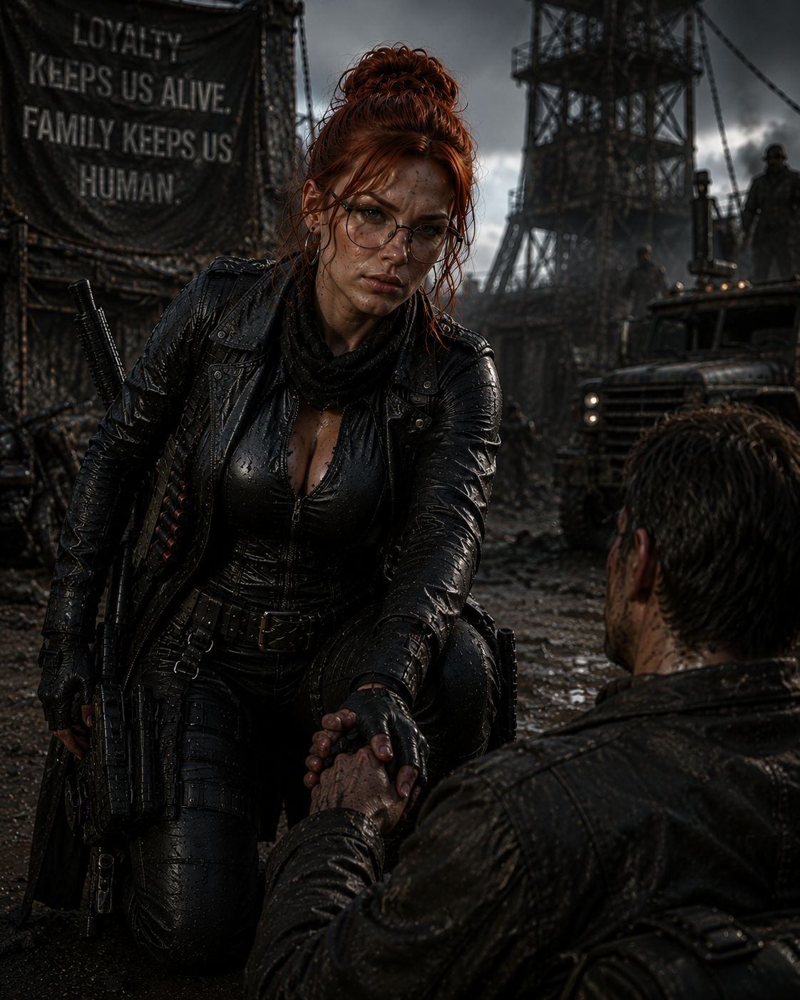
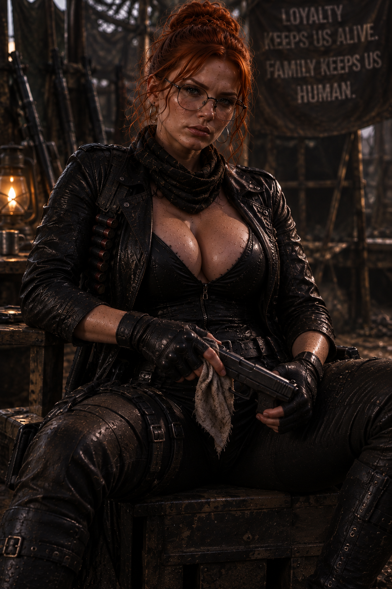

O mesmo sangue.
Outra história.
As imagens confirmam Diana em diferentes momentos depois da queda. O restante permanece protegido até a definição oficial.



Filha de Jack e Alice. Novos registros visuais foram recuperados; função, localização e destino aguardam a lore oficial.
As imagens confirmam Diana em diferentes momentos depois da queda. O restante permanece protegido até a definição oficial.

